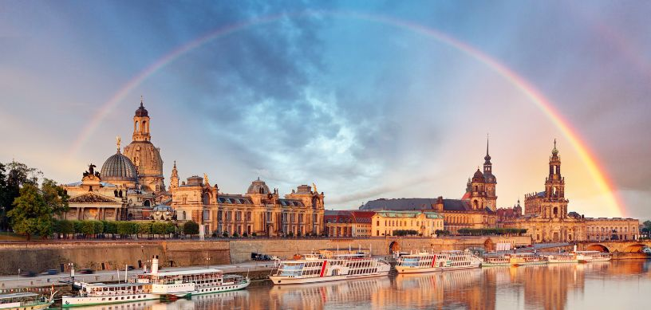

With its rich cultural legacy, top-tier universities, and lively cities, Germany is an appealing study abroad destination. Students gain access to top-notch education as well as the chance to immerse themselves in a nation noted for its history and innovation.
A range of programs for pursuing renewable energy, including bachelor's and master's degrees in fields viz., sustainable energy systems, environmental sciences, and energy engineering are offered in Germany. Bachelor's degrees in Renewable Energy generally take 3-4 years to complete, while master's degrees span 1-2 years.
Why study Renewable Energy in Germany?
One should think about studying Renewable Energy in Germany for these compelling reasons:
- Academic Excellence: Germany is home to prestigious universities that offer specialized programs.
- Strong Research: First-rate research institutions and state-of-the-art projects.
- Cutting-edge Developments: Germany is a pioneer in renewable energy technologies.
- Sustainable Development: Focus on sustainability and environmental protection.
- Robust Policy Backing: There are numerous government policies and incentives pertaining to green energy.
- Global Effect: Germany's transition offers invaluabe insights for global energy strategies.
- Industry Prospects: Germany boasts a vibrant renewable energy industry that offers employment opportunities.
Leading Renewable Energy specializations to pursue in Germany
Students aspiring to pursue Renewable Energy in Germany can choose from among these specializations:
- Biomass and Bioenergy
- Wind Energy Technology
- Energy Informatics
- Geothermal Energy
- Solar Energy Engineering
- Environmental and Energy Economics
- Sustainable Energy Management
- Renewable Energy Systems
- Hydropower Engineering
- Energy Storage Systems
Prominent universities in Germany to pursue Renewable Energy
Among the prominent universities in Germany to pursue Renewable Energy are:
- University of Stuttgart
- Technical University of Munich (TUM)
- Berlin Institute of Technology (TU Berlin)
- University of Kassel
- University of Freiburg
- University of Oldenburg
- RWTH Aachen University
- Leipzig University
- Hamburg University of Technology (TUHH)
- Karlsruhe Institute of Technology (KIT)
What's the cost of studying Renewable Energy in Germany?
Based on the university and the particular program, the cost of pursuing Renewable Energy in Germany can differ. For public universities, overseas students are charged low or no tuition fees at the undergraduate level, although there may be a minimal semester fee ranging from €150-€350. Nevertheless, students may anticipate paying between €1,500-€20,000 in tuition annually for certain Master’s programs, particularly those offered in English or at private universities.
Besides tuition fees, living expenses, which, based on the city and his/her way of living can range from €800-€1,200 per month, should also be taken into account by students. Food, housing, transit, health insurance, and other individual expenditures are entailed in this. To assist in defraying these expenses, scholarships and funding opportunities are available.
Eligibility Criteria to pursue Renewable Energy in Germany
Mentioned below are the eligibility criteria to pursue Renewable Energy in Germany:
- For undergraduate programs, the student needs to hold a high school diploma or its comparable. For master's degrees, the student needs to hold a bachelor's degree in an associated field viz., Environmental Science, Physics, Engineering.
- He/she needs to fulfill the minimum GPA established by the university (usually around 2.5 on a 4.0 scale or comparable).
- Certain programs, particularly at the postgraduate level may demand GRE or GMAT test scores.
- For English-taught programs, students need to prove their fluency in English through appearing for tests viz., the IELTS or TOEFL. For German-taught programs, students should prove their fluency in German through tests viz., TestDaF or DSH.
- Prior work experience or internships in an associated field may be required by certain programs.
- Submission of a well-articulated statememt of purpose or motivation letter describing the student’s interest in the field and professional objectives.
- Generally 1-3 recommendation letters from instructors or employers.
- A research proposal may be needed for certain postgraduate programs, particularly for PhD candidates.
- The student needs to meet further requirements set forth by the particular university or program.
- He/she needs to provide evidence of health insurance coverage in Germany.
- The student also needs to provide evidence of sufficient funds (e.g., blocked account, scholarship).
- To study in Germany, overseas students require a valid student visa.
To learn about the precise prerequisites, students should visit the university’s official websites as these requirements may vary slightly based on the university and particular program.
Job Opportunities Post Completing Renewable Energy in Germany
Students, after completing a degree in Renewable Energy in Germany can take up any of these jobs:
- Energy Analyst
- Biomass Plant Operator
- Renewable Energy Engineer
- Energy Policy Advisor
- Renewable Energy Consultant
- Wind Turbine Technician
- Energy Storage Specialist
- Grid Integration Engineer
- Sustainable Energy Systems Designer
- Solar Panel Installer, among many others
FAQs:
Q1. Does the government offer any incentives for renewable energy projects?
Yes, a range of incentives viz., The Renewable Energy Sources Act (EEG), which offers financial support; Feed-in Tariffs (FiTs) for renewable energy producers; and Grants and loans for research and development in renewable energy are offered by the government in Germany.
Q2. Post graduation, are overseas students allowed to work in the renewable energy sector in Germany?
Yes, following graduation, overseas students can work in Germany. They may apply for an 18-month residency permit to seek employment in their field of study. Upon finding employment, they can apply for a work permit or EU Blue Card.
For further assistance or queries students can contact us, Edwise International and avail our wide range of services for students on destinations like study in UK,study in USA, study in Canada, study in Australia, study in New-Zealand, study in Singapore, study in Ireland and many other countries.